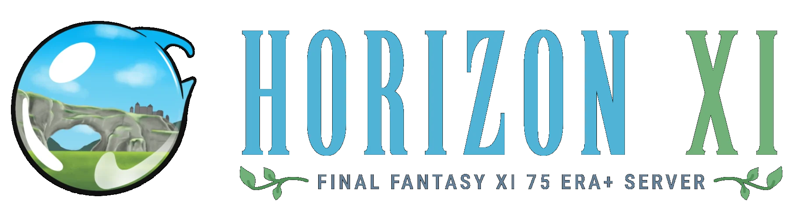

Community News
 By
RANews
By
RANews
Contents
Tracking Down Playstation Pointers
suXin is back with another blog post that goes into full detail regarding the tracking of pointers on PlayStation systems, with use of emulator debuggers and the Ghidra compiler. Pointer chains can be complicated to learn, so if you are a (junior) developer who wants to learn more about the most efficient way of tracking them down, this guide can be an absolute lifesaver.
Tracking down pointers for PlayStation games using debuggers and Ghidra
Standalone Support

As many of you may have already heard, we’ve been working with the HorizonXI team to bring RetroAchievements support to their Final Fantasy XI private server. Their ideology of maintaining that classic feel of the older FFXI era with some new experiences aligns well with the RA goal of bringing achievements to classic gaming experiences. FFXI holds a significant place in gaming history, especially as a landmark title for the PS2, and we’re hoping to introduce even more players to it with this partnership!
Three sets are currently available to play:
 Final Fantasy XI Final Fantasy XI |
 Final Fantasy XI: Rise of the Zilart Final Fantasy XI: Rise of the Zilart |
 Final Fantasy XI [Subset - Hero of Nations] Final Fantasy XI [Subset - Hero of Nations] |
Game launcher and instructions on how to link your RA account can be found at https://horizonxi.com/.
RA Awards
Th RA Awards discussion and voting is at it again for it’s 4th year. Checkout the #rawards-discussion and #rawards-voting Discord channels for more information and the latests polls.
PlayTester Revamp
The PlayTester team has been revamped in order to expant the team and it’s current capabilities. Playtest request can be submitted and discussed via Discord in the new forum channel.
Reach out to  TimeCrush for more information.
TimeCrush for more information.
Cheat Investigation
We’ve started an official cheat team and created the dedicated account  RACheats.
RACheats.
If you suspect anyone may be cheating or see suspicious scores/times, you can send a DM to that account and the team will look into it.
Official RA YouTube
The official RetroAchievements YouTube Channel has passed 1,000 subscribers. We’re looking for users who may already have videos or would like to make videos to contribute to the channel.
Type of content we’re looking for:
- “What is RetroAchievements” - A Channel Intro video showcasing what the website is all about!
- Emulation Tutorials,
- Developer Tutorials,
- Achievement Guides,
- Announcement Videos,
- Reviews,
- Top 10’s
- …and more!
If you’re interested in making content for the channel reach out to  Snow via DM!
Snow via DM!
Jr Developer Graduates
| Graduate | Game |
|---|---|
 Gudra Gudra |
 Monster Hunter Freedom (PlayStation Portable) Monster Hunter Freedom (PlayStation Portable) |
 Yurana Yurana |
 Mega Man Battle Network 5: Double Team DS (Nintendo DS) Mega Man Battle Network 5: Double Team DS (Nintendo DS) |
 DrewMHax0r DrewMHax0r |
 Spanky’s Quest | Lucky Monkey (Game Boy) Spanky’s Quest | Lucky Monkey (Game Boy) |
Current Stats: 7 Developers have graduated in 2024.
Developer Compliance
Developer Code of Conduct Updates
Handful of updates have recently been made to the Developer Code of Conduct. Below you can find a summary of the key points as well as links to their respective pages and diffs for exact changes.
Rich Presence Custom Name Restriction
Rich Presence that directly displays custom player input text is now prohibited. We have seen numerous cases where players will input inappropriate and offense names that get displayed on site pages, including the front page. Please update any of your sets that display custom input in the Rich Presence status at your earliest convenience.
Writing Policy Username References
Writing Policy has been updated to outline the use of username references within achievement sets.
- Username references must be requested and approved.
- Username references must not carry a negative notion.
- Users being referenced can request their name to be removed at any time.
- Banned user references are prohibited.
Claim Progress Reports
Progress Reporting sections added to include the following:
- Progress reports should be posted in new forum posts for easier tracking, not editing a previous post. Report should include a overall status of where you are with the set.
- A 3rd extension to a set will require the progress report to be sent to the Developer Compliance team for review.
- Claims with no progress during the 3 month period may be subject to being dropped.
Achievement Set Revisions
Win and Progression Types wording added. [m] tag information reworded for Missable feature. Additional points added to the When Making a Revision section:
- Revisions should be made with the intention of them being the final revision.
- Avoid making a revision claim shortly after releasing your set. This is very frustrating to the players.
- Making a revision to get a higher rank on the High Scores table is prohibited.
Achievement Updates
- Sitting Down on the Job demoted for Unwanted Concept: Zero effort without purpose
- Bullet Fury demoted for Unwanted Concept: Grinding without purpose
Set Approvals
- Super Mario Sunshine [Subset - Max% Pre-Peach]
- Super Mario Sunshine [Subset - Hoverless]
- Super Mario Sunshine [Subset - Coin Collector]
- Mario Golf: Toadstool Tour [Subset - Completionist]
- Mario & Luigi: Superstar Saga [Subset - Rare Drops]
- Dragon Quest V: Hand of the Heavenly Bride [Subset - Treasures n’ Trapdoors]
- Dragon Quest V Hand of the Heavenly Bride [Subset - Goodies Globetrotter]
- Pikmin [Subset - 404 No Blues Found]
- Pikmin [Subset - 6 Day Challenge]
- Viewtiful Joe [Subset - Rainbow V]
- Pac-Attack [Japan]
- Metroid Prime [Subset - NES Prime]
- Tales of Symphonia [Subset - Gung Ho Run]
- Pokemon Colosseum [Subset - Espeon & Umbreon]
Site Updates
RAWeb v6.0.0
- New design for statistics on user profile pages by @wescopeland in #2175
- Show progress/backlog columns on console game lists by @wescopeland in #2161
- Add Game Suggestions page by @Jamiras in #2159
- Add progress to Recent Players list on game pages by @Jamiras in #2160
- Make game list header rows stick to top when scrolling by @wescopeland in #2149
- Allow filtering game lists by progression status by @wescopeland in #2148
- Show Beaten/Completed/Mastery indicators in Completion list on profile page by @wescopeland in #2153
- Adjust point text in recent games when some achievements are hardcore and others aren’t by @wescopeland in #2157
- Add ‘Games without 100% completion’ filter to Completion Progress page by @wescopeland in #2169
- Add copy to clipboard functionality for web api key by @wescopeland in #2150
- Adjust ‘Viewing X of Y’ label for recent players if both numbers match by @wescopeland in #2154
- Adjust colors on Recent Progress chart by @wescopeland in #2167
- Adjust alignment of achievement grid within Recently Played game dropdowns by @drisc in #2177
- Remove unlock distribution chart when viewing unofficial achievements by @wescopeland in #2168
- Swap Twitter link for Threads in footer by @wescopeland in #2170
- Use singular/plural label for ticket count on achievement pages by @wescopeland in #2184
- Allow .7z urls for RAPatches links in hash manager by @wescopeland in #2151
- Fix ticket manager link on unofficial game pages not going to tickets for unofficial achievements by @drisc in #2183
- Fix extra space being shown for empty motto by @wescopeland in #2156
- Fix issue unlinking hashes for games with apostrophes in title by @wescopeland in #2164
- Fix badge alignment on reorder page @drisc in #2174
- Fix missing text for Certified Legend badge to reorder page by @drisc in #2171
- Fix site-awards alignment by @drisc in #2139
- Fix small gap at the rounded corners of tooltips by @drisc in #2163
Environment
- Use models to fetch comments by @wescopeland in #2181
- Optimize gameslist and officialgameslist routines by @wescopeland in #2182
- Clean up system names and images by @luchaos in #2172
- Store new permissions related timestamps by @luchaos in #2189
- Support for additional leaderboard formats by @Jamiras in #2166
Future Features
- Add Filament admin panel and permission matrix preparations by @luchaos in #2165
RAWeb v6.1.0
- Link URLs in motto on profile page by @wescopeland in #2241
- Link recent players progress bars to game compare page by @wescopeland in #2236
- Add link to beaten games stat on profile page by @wescopeland in #2230
- Add warning if attempting navigation while editing code notes by @wescopeland in #2226
- Add pagination to global developer stats page by @wescopeland in #2253
- Disallow all html except and
tags in news posts by @wescopeland in #2240 - Allow filtering Standalone system on completion progress page by @wescopeland in #2235
- Allow viewing Events on completion progress page by @wescopeland in #2251
- Adjust location of moderation tools on profile page by @wescopeland in #2233
- Remove link from Untracked site ranks on user profile page by @wescopeland in #2228
- Don’t show comments from banned users by @wescopeland in #2234
- Don’t report ‘linked by’ on supported game files page (only on manage hashes page) by @wescopeland in #2244
- Don’t show “no related games” on hub pages without games by @wescopeland in #2252
- Add warning when following link to untrusted domains by @wescopeland in #2242
- Remove “report cheats” from RAdmin messaging criteria on contact page by @wescopeland in #2249
- Fix player count for subset if parent game has no players by @wescopeland in #2259
- Fix unofficial achievements being marked as unlocked by @wescopeland in #2237
- Fix rendering of less than in recent forum posts widget by @wescopeland in #2239
- Fix beaten stats not being updated when resetting progress by @wescopeland in #2232
- Fix double-counting hacks on homebrew systems on beaten leaderboard by @wescopeland in #2227
- Fix progress indicators appearing in front of menu bar by @wescopeland in #2243
- Fix manual unlocks not showing in user game activity page by @Jamiras in #2256
- Fix broken link for manual unlock instructions when creating ticket by @Jamiras in #2254
Public API
- Add IconURL to API_GetConsoleIDs by @WedgeSparda in #2264
Environment
- Add note about updating api-docs in CONTRIBUTING.md by @wescopeland in #2263
- Eliminate Site namespace by @luchaos in #2186
- Prepare for Folio and Octane by @luchaos in #2229
- Enable Octane reloads in Docker by @luchaos in #2238
Emulator Update
RALibretro v1.7.0
- Implement microphone interface for cores that support it
- Enable NeoCD core for NeoGeo CD
- Enable Uzem core for Uzebox
- Enable melonDS DS for DS/DSi
- Enable mGBA core for GB/GBC
- Support identifying PSP CHDs (note: does not support DVD formatted CHDs)
- Show warning when loading a core that hasn’t been updated in over a year
- Support for numeric prefixes on state files in Load Game State dialog
- Default ‘Preserve aspect ratio’ setting to true
- Put DSI under Nintendo submenu when separating cores by manufacturer
- Fix hash logic for small files on CDs (affects PSP hashes)
- Fix runtime state not being reset when loading save state without achievement data
- Fix window shrinking on Windows 11
- Fix background input indicator not showing as checked after restarting application
- RAHasher: support wildcard filename matching
RA Integration 1.3 Alpha & Beta
1.3 Alpha
- Adds ASCII view to memory inspector when window is wide enough
- Support for marking achievement types (Missable/Progression/Win)
- Support for Float BE
- Updated overlay for achievements list
- Lots of under-the-hood changes to better support multi-threaded frontends and leverage the rc_client integration layer we’re recommending for all standalones to use.
1.3 Beta
- Fixes a couple more multi-threaded issues and finalizes the rc_client integration.
DevQuest
DevQuest Awards
 [DevQuest 001] Ticket Massacre [DevQuest 001] Ticket Massacre |
||
|---|---|---|
 Sutarion Sutarion |
||
 [DevQuest 001-II] Ticket Massacre II [DevQuest 001-II] Ticket Massacre II |
||
|---|---|---|
 Bryan1150 Bryan1150 |
||
 [DevQuest 001-III] Ticket Massacre III [DevQuest 001-III] Ticket Massacre III |
||
|---|---|---|
 Excessiveiser Excessiveiser |
||
 [DevQuest 004] Veteran Deveoper [DevQuest 004] Veteran Deveoper |
||
|---|---|---|
 Etron Etron |
 ladynadiad ladynadiad |
|
 [DevQuest 006] The Unwanted [DevQuest 006] The Unwanted |
||
|---|---|---|
 Wulden Wulden |
 Knightmare II: The Maze of Galious (MSX) Knightmare II: The Maze of Galious (MSX) |
|
| Gudra |
 Penguin Patrol (DSi) Penguin Patrol (DSi) |
|
 [DevQuest 008] World Traveler [DevQuest 008] World Traveler |
||
|---|---|---|
 tomojin tomojin |
 Golgo 13 (SG-1000) Golgo 13 (SG-1000) |
|
 Asuka 120% Limited BURNING Fest. (Saturn) Asuka 120% Limited BURNING Fest. (Saturn) |
||
 [DevQuest 012] Hacker's Habit [DevQuest 012] Hacker's Habit |
||
|---|---|---|
 clymax clymax |
 ~Hack~ Battle of Olympus, The: Item Randomizer (NES) ~Hack~ Battle of Olympus, The: Item Randomizer (NES) |
|
 ~Hack~ Blaster Master: The Lost Key (NES) ~Hack~ Blaster Master: The Lost Key (NES) |
||

 kmpers
kmpers


 [DevQuest 015] Console Conqueror [DevQuest 015] Console Conqueror |
||
|---|---|---|
 Hexadigital Hexadigital |
ladynadiad |
|
 [DevQuest 016] Wish This Set [DevQuest 016] Wish This Set |
||
|---|---|---|
 WilHiteWarrior WilHiteWarrior |
 Contra: Shattered Soldier (PS2) Contra: Shattered Soldier (PS2) |
|
 [DevQuest 016-II] Wish This Set II [DevQuest 016-II] Wish This Set II |
||
|---|---|---|
 ThatAmericanSlacker ThatAmericanSlacker |
Contra: Shattered Soldier (PS2) |
|
 [DevQuest 017] RA World Cup [DevQuest 017] RA World Cup |
||
|---|---|---|
 MaddieKittyTV MaddieKittyTV |
 Apple Bowl (AII) Apple Bowl (AII) |
|
 Dick Vitale's "Awesome, Baby!" College Hoops (MD) Dick Vitale's "Awesome, Baby!" College Hoops (MD) |
||

 s0uth
s0uth


 [DevQuest 019] Wheel of Genres [DevQuest 019] Wheel of Genres |
||
|---|---|---|
 suspect15 suspect15 |
 Final Fantasy XII: Revenant Wings (NDS) Final Fantasy XII: Revenant Wings (NDS) |
|